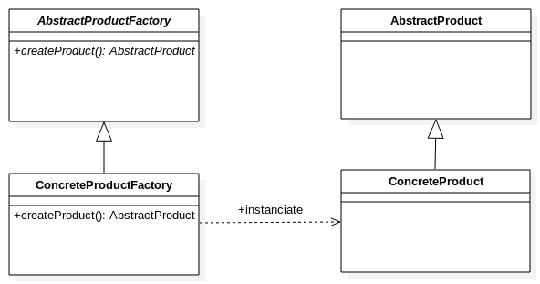

FactoryMethod
Problème
On dispose d'une classe abstraite et on souhaite faire abstraction sur la création des objets concrets.

Exemple
- Connexion à une base de données
interface Connection {
}class PostgregsqlConnection implements Connection {
}- Fabrique abstraite pour les connexions
interface ConnectionFactory {
public Connection createConnection(String dbname) ;
}class PostgregsqlConnectionFactory implements ConnectionFactory {
public Connection createConnection(String dbname) {
return new PostgregsqlConnection(dbname);
}
}